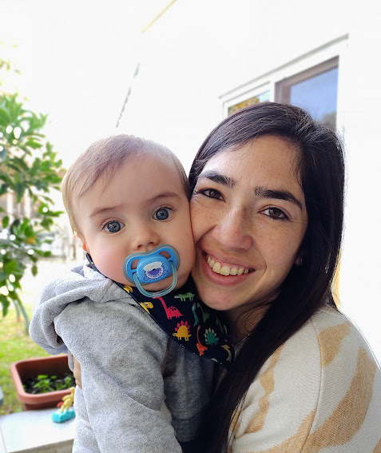
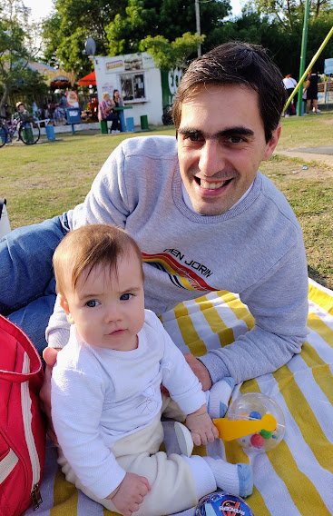

Pimero quiero presentarles a él: Quién me apretuja, me llena de besos y abrazos, me alza como puede aunque a mi mucho no me guste.
Pero cuando él me llama salgo corriendo de alegría, lo busco por todas partes, disfruto de sus locuras porque lo quiero mucho.
Y cuándo lo veo triste soy el primero en ir a abrazarlo y hacerle caricias, porque es mi hermano mayor y hay que cuidarlo.
Ellos son mis papás
Mamá
Papá
